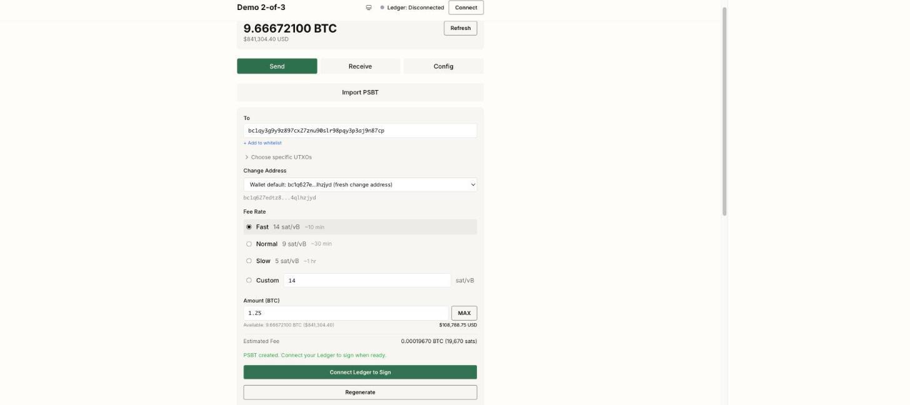

The coordinator
Any M-of-N quorum
2-of-3, 3-of-5, whatever your setup calls for. Native segwit multisig (P2WSH).
Ledger over WebUSB
Sign directly from a connected Ledger. No companion app in the middle.
PSBT in, PSBT out
Move PSBTs by file, or over animated QR for SeedSigner — no cable, no network. Works with Coldcard and anything else that speaks PSBT.
Watch-only by design
Configured with xpubs only. Private keys never touch the app.
Day-to-day tooling
Multi-wallet switcher, address labels, recipient whitelist, change-address control, live mempool fee estimates.
Nothing else
No server, no accounts, no telemetry. A static bundle plus a local API proxy.
Trust boundary
Your xpubs stay in your build. Sigil compiles your wallet configuration into a bundle you run locally — nothing phones home, and no third party learns your addresses or balances.
The app builds and coordinates PSBTs; every signature comes from your own hardware. Anyone who can fetch a configured bundle can derive your addresses, so run it on your own machine and never host a configured build publicly.
Quick start
$ git clone https://github.com/bensig/sigil && cd sigil
$ npm install
$ npm startSetup is a config file, not a wizard: copy src/configs/example, set your network, quorum, and cosigner xpubs, then restart. Full config reference in the README.